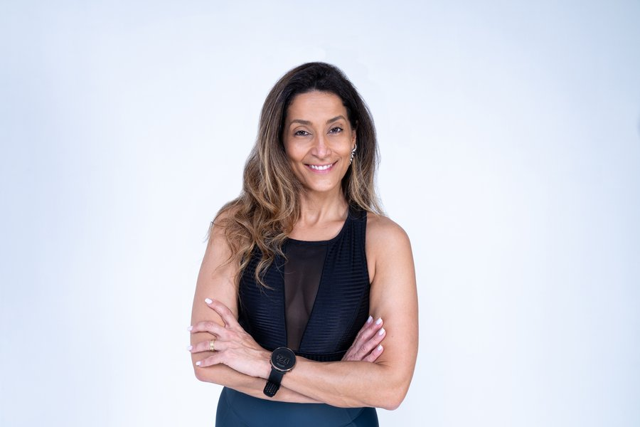
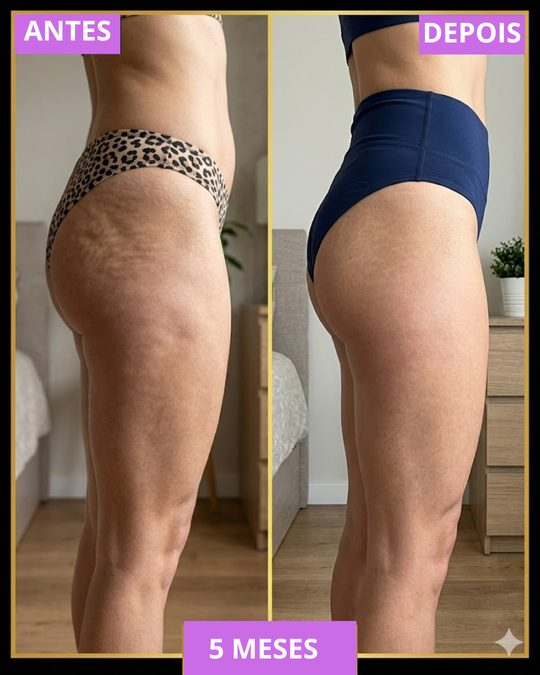
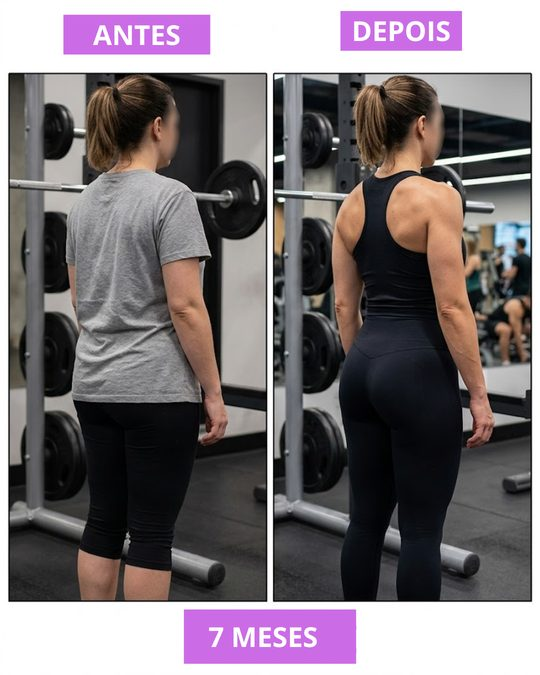
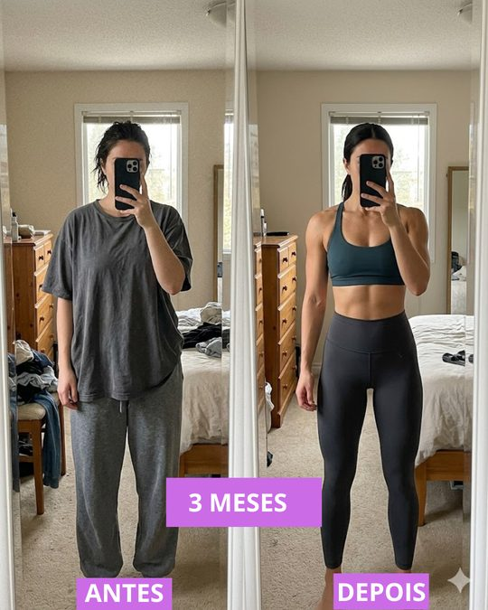
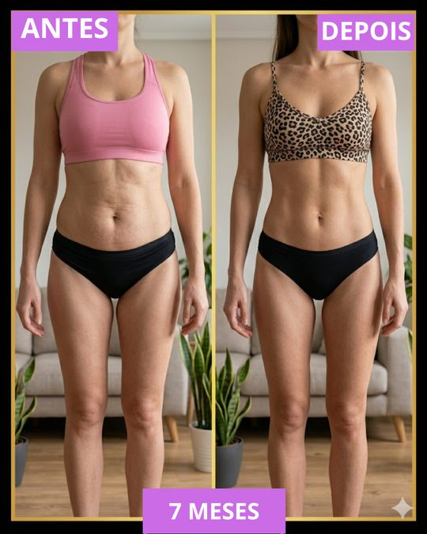
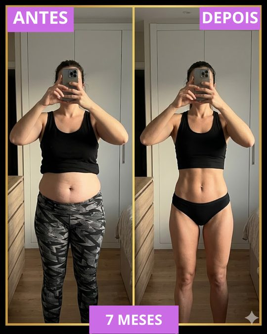

Personal Trainer · Especialista em Saúde Feminina · Online e Presencial em Alphaville
Gestante, mãe, pós-parto, menopausa, diástase, pós-bariátrica ou simplesmente sem tempo, o Método Vida 7 é o único protocolo de treino criado para respeitar o corpo da mulher real, em qualquer fase da sua vida. Comece falando direto com a Sari no WhatsApp para entender qual é o seu próximo passo.

Você se identifica?
Você é mãe e sente que não sobra tempo nem energia para treinar
Você está na menopausa e nada parece funcionar para emagrecer ou manter o peso
Você tem diástase e tem medo de treinar errado e piorar ainda mais
Você está grávida e quer se movimentar com segurança, sem arriscá-la ou ao bebê
Você está no pós-parto e quer recuperar o corpo de um jeito real e sem pressa
Você passou por cirurgia bariátrica ou usa Mounjaro/Ozempic e não quer perder massa muscular
Você tenta treinar, mas os resultados simplesmente não aparecem, e a culpa sempre parece ser sua
Você quer longevidade e qualidade de vida, não só a estética, mas sentir seu corpo forte e funcional
A verdade que ninguém conta
A verdade que incomoda é essa: a maioria dos programas de treino foi criada por homens, para corpos de homens. A ciência do exercício foi construída por décadas com foco no corpo masculino. Os planos genéricos de academia, os treinos do YouTube, os apps de fitness, quase todos ignoram o que torna o corpo feminino único:
Na menopausa, o estrogênio cai e o cortisol sobe: fazer cardio demais pode te fazer engordar, não emagrecer. Ninguém avisa isso.
Agachamento, abdominal, burpee, feitos sem orientação correta com diástase, podem transformar um problema controlável em algo sério. Ninguém avisa isso também.
Seu corpo acabou de passar pela maior transformação possível. Voltar a treinar "forte" logo pode causar lesão, prolapso e desmotivação. Ninguém conta isso nas academias.
O remédio emagrece. Mas sem treino de força específico, o que vai embora junto com a gordura é o músculo que você precisava manter. Ninguém te avisa disso na consulta.
"Você não falhou. Você seguiu um método que nunca foi feito para você."
Sari SheronÉ por isso que o Método Vida 7 existe.
A solução
MÉTODO VIDA 7O Método Vida 7 é um protocolo de treino e saúde desenvolvido por Sari Sheron especialmente para o corpo feminino, que leva em conta sua biologia, seus hormônios, sua fase de vida e sua rotina real.
Não é um plano genérico. Não é uma sequência de exercícios copiada da internet. É um método com começo, meio e fim, construído em cima de quem você é, do que você passou e de onde você quer chegar.
O que torna diferente
Antes de qualquer treino, entendemos quem você é: sua fase de vida, histórico de saúde, rotina e objetivos reais. Nenhuma mulher começa igual.
Seu treino é desenhado respeitando seus hormônios, seja na gestação, no pós-parto, na menopausa ou na fase de uso de medicamentos. Biologia feminina no centro de tudo.
Diástase, pós-bariátrica, gestação ou pós-parto: cada condição tem um protocolo específico que promove evolução sem risco de lesão ou piora.
Treinos de 30 a 50 minutos, planejados para quem tem filhos, trabalho, compromissos e pouco tempo. Online de qualquer lugar do Brasil ou presencial em Alphaville.
Você não recebe um PDF e some. A Sari acompanha sua evolução, ajusta o plano quando necessário e está acessível para dúvidas. Você nunca treina sozinha.
Evoluímos juntas, no seu ritmo, com critério. Sem pulos bruscos que causam lesão. Sem estagnação que gera desmotivação. Resultado que você sente semana a semana.
O objetivo final não é o espelho. É você dormir melhor, ter mais energia, se sentir forte, funcional e presente na sua vida. O Método Vida 7 é sobre qualidade de vida, não só estética.
Feito para você
Movimento com segurança, para você e para o bebê em cada trimestre.
Recuperação real do corpo, fechamento da diástase e retorno ao treino com cuidado.
Resultado em 30 minutos, 3x por semana. Sem culpa, sem desculpa, só resultado.
Protocolo específico que fecha, fortalece e protege, sem exercícios que pioram.
Treino adaptado às mudanças hormonais para emagrecer, manter músculo e ter energia.
Força e músculo preservados durante o processo de emagrecimento acelerado.
Corpo funcional, bonito e saudável aos 30, 40, 50 e além.
Para quem tentou de tudo e não viu resultado, porque nunca teve o método certo.
Se você se vê em qualquer um desses perfis, falar com a Sari no WhatsApp é o seu próximo passo.
Como treinar com a Sari
Morou longe de Alphaville? Não importa. O Método Vida 7 funciona 100% online, com plano de treino personalizado, acompanhamento pelo WhatsApp e evolução monitorada de perto.
✦ Ideal para quem quer resultado de qualquer cidade, com a praticidade de treinar em casa ou na academia do bairro.
Para quem mora na região e quer o acompanhamento olho no olho. A Sari atende em academias de referência como Ironberg, Bodytec e outras unidades parceiras em Alphaville.
✦ Ideal para quem quer a presença física de uma personal especializada, com correção de postura e técnica em tempo real.
Resultados reais
"A Sari é uma profissional incrível! Me ajudou todos esses meses a como fazer os exercícios certo, me auxiliou para manter a constância nos treinos e melhorar minha saúde. Super recomendo!"
"Profissional excelente tecnicamente, individualiza o plano de treino e é extremamente acolhedora. Recomendo demais!!!"
"Profissional excelente! Muito cuidadosa nos treinos, correção de postura e execução! 10/10, super recomendo!"
Resultados reais das alunas
Cada resultado foi conquistado com o Método Vida 7, treino certo, protocolo individualizado e acompanhamento próximo da Sari.





Quem é Sari Sheron
Sari Sheron é Personal Trainer, Health Coach e Instrutora de Pilates com especialização em Medicina do Estilo de Vida. Ela não começou sua carreira para montar corpos perfeitos, começou porque percebeu que as mulheres ao redor dela estavam sendo ignoradas pelos métodos tradicionais.
Gestantes sem orientação. Mães se culpando por não conseguir treinar. Mulheres na menopausa tentando de tudo sem resultado. Cada história que Sari ouvia reforçava a mesma certeza: faltava um método feito de verdade para a mulher.
Foi dessa percepção que nasceu o Método Vida 7, um protocolo que une treino funcional, Pilates, saúde hormonal e qualidade de vida, colocando a biologia e a fase de vida de cada mulher no centro de tudo. Hoje, Sari atende mulheres de todo o Brasil online e presencialmente em Alphaville.
Simples, gratuito e sem compromisso
Clique no botão abaixo. Abre uma conversa direta no WhatsApp da Sari, com uma mensagem pronta. É só enviar.
A Sari entende seu momento (gestação, pós-parto, menopausa, diástase, rotina) e te explica como o Método Vida 7 funciona para o seu caso.
Quando você sentir que faz sentido, é só combinar com a Sari como começar. Sem pressão e sem pressa.
Sem vendas forçadas. Sem scripts. Sem pressão. Só uma conversa direta com quem realmente entende o corpo feminino.
Dúvidas frequentes
Você chegou até aqui porque algo nessa página falou com você. Ao falar direto com a Sari no WhatsApp, você entende como o Método Vida 7 se encaixa na sua fase de vida, sem pagar nada e sem compromisso.
Sem pressão. Sem venda forçada. Só uma conversa que te ajuda de verdade.
Atendimento direto com a Sari · Sem compromisso